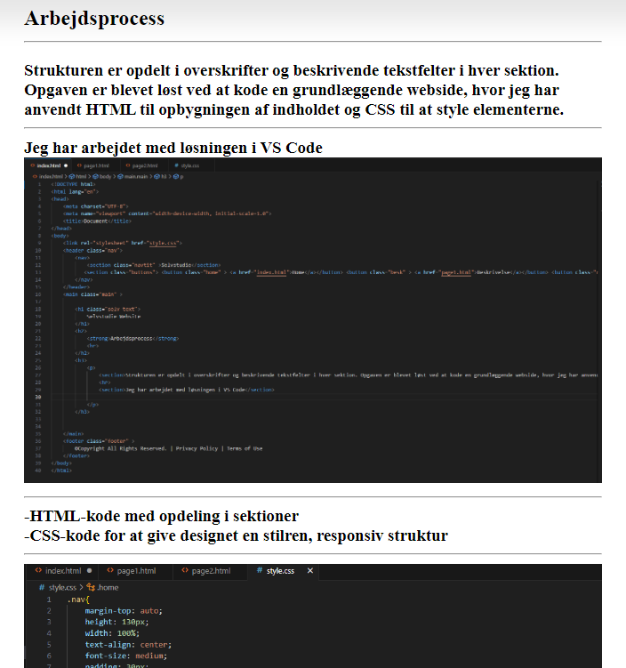
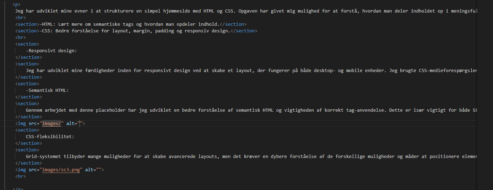
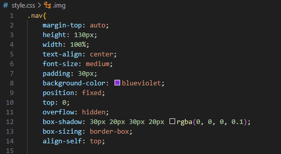

Selvstudie Website
Reflektion:
Jeg har udviklet mine evner i at strukturere en simpel hjemmeside med HTML og CSS. Opgaven har givet mig mulighed for at forstå, hvordan man deler indholdet op i meningsfulde sektioner, og hvordan man bruger CSS til at style en placeholder, som kan tilpasses senere.
-HTML: Lært mere om semantiske tags og hvordan man opdeler indhold.
-CSS: Bedre forståelse for layout, margin, padding og responsiv design.
-Responsivt design:
Jeg har udviklet mine færdigheder inden for responsivt design ved at skabe et layout, der fungerer på både desktop- og mobile enheder. Jeg brugte CSS-medieforespørgsler til at sikre, at siden tilpasser sig forskellige skærmstørrelser. Dette gav mig en dybere forståelse af, hvordan man håndterer forskellige enhedsopløsninger og optimerer brugeroplevelsen på tværs af platforme.

-Semantisk HTML:
Gennem arbejdet med denne placeholder har jeg udviklet en bedre forståelse af semantisk HTML og vigtigheden af korrekt tag-anvendelse. Dette er især vigtigt for både SEO og tilgængelighed, da det hjælper både søgemaskiner og skærmlæsere med at forstå strukturen på siden.

CSS-fleksibilitet:
Grid-systemet tilbyder mange muligheder for at skabe avancerede layouts, men det kræver en dybere forståelse af de forskellige muligheder og måder at positionere elementer på tværs af flere dimensioner. Jeg har brug for mere praksis med dette, da det kan være en kraftfuld metode til at designe mere komplekse og skalerbare web layouts.

Jeg har udviklet mine evner i at strukturere en simpel hjemmeside med HTML og CSS. Opgaven har givet mig mulighed for at forstå, hvordan man deler indholdet op i meningsfulde sektioner, og hvordan man bruger CSS til at style en placeholder, som kan tilpasses senere.